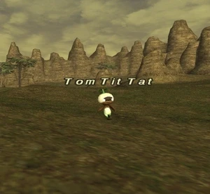

Level 75 reference · Zenith rules
|
Job: Notorious Monster |
 |

|
Zone |
Level |
Drops |
Steal |
Spawns |
Notes | ||||||
|
9-10 |
1 |
L, S
| |||||||||
|
HP = Detects Low HP; M = Detects Magic; Sc = Follows by Scent; T(S) = True-sight; T(H) = True-hearing JA = Detects job abilities; WS = Detects weaponskills; Z(D) = Asleep in Daytime; Z(N) = Asleep at Nighttime | |||||||||||

Notes:
- Located around H-6 to I-7, most notably I-6 (Starfall Hillock). Often spotted at the Outpost.
- Lottery spawn from the Mandragoras
- PH is the Bottom Mandragora of the only group of 3 on the wide scan from (H-5).
- The PH tends to wander in a larger area within H-5 but heading far to the south or east of that tile as well, without wide scan it best to kill all Mandragoras North to North-East of the Outpost.
- Around 500 HP
- Killable by 1 level 15 player, known killed with great difficulty by a RDM8/BST4
Adapted from Eden Wiki: Tom Tit Tat · Contributors and history · CC BY-SA 4.0. Revision 46604. Layout, links and optional background text adapted for Zenith.